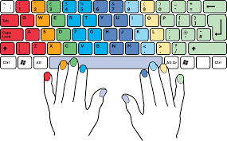

What is the catch in the usual way of typing:-

So, regular typing is what you used to do from the time you start using keyboards: finding a key looking at the keyboard, and then pressing the key. Eventually, you get better at it every day, and sometimes you even guess the place of that particular key without looking but only sometimes. So, in this way of typing, you usually use only 3-4 or a maximum of 5 fingers while typing, and you look at the keyboard continuously if you are typing long paragraphs. The most common word people type without looking at the keyboard is their name.
So if one person even masters it very much, they will be able to reach a maximum of 70-75 wpm(that too sometimes depends on the mood and flow of fingers :) sad tho!
Some people who can reach more than 70-80 wpm are unconsciously developing their skill towards touch typing, but most people cannot do that just because they don't type so often or extensively.
You can take a look at my typing speed.
Let's start with what touch typing is:-
It is a way of typing in which you don't look at the keyboard and use all ten fingers to order a particular letter or some punctuation. There is a unique placement of fingers that you should follow to start learning. If you look at your keyboard carefully, you will find bumps on the letter 'F' and 'J' .Yes, these are the places where you should place your index fingers of respective hands, and left-hand fingers will follow the pattern A->S->D->F, and in the same way, right-hand fingers will follow the pattern J->K->L->;
In this way, you can type the letter of the respective halves (i.e., the left side and the right side if f and j, respectively).
You can match your fingers with a particular color as shown in the figure.
All described previously is just the Gist of what it is and how it works. There are some more technicalities to it which we will talk about later on in this blog.
My Experience with touch typing:-
It all started during my JEE preparation in 11th Standard when I found a video of Ali Abdaal( link at the end). In that video, he talked about how he types so fast and got benefits by typing fast. That skill at that time attracted me. By the end of the video, I started testing my speed on different websites which measure typing speed. At that time, I was averaging about 35 wpm. Your hunger is the thing that drives you to improve more and more; that day, I did speed tests on and on without stopping for even a single minute and realized that I would not be able to improve at this with this plenty of fingers and rash method. Then I jumped on to a video on youtube on how to learn touch typing and watched plenty of videos and came across many websites/software that is programmed to teach you this method. But, one major thing these youtube videos did wrong to me is that they should have told the reality of the whole mechanism when you start learning touch typing.
You must have encountered things like how to achieve this in these many weeks or days. All these thumbnails made me learn it very hasty and rashly in the first couple of weeks. The primary science behind this is to learn a different method if you are leaving a typing pattern. So eventually, this will lead to a decrease in speed by a considerable amount. Most people fall for click-bait youtube videos( For Ex:- how I went from 45 to 90 wpm in 1 week), and there needs to be a better impression of this skill on the viewer watching the video.
The thing is that when you start learning touch typing, your speed goes down to almost 10 percent of the actual rate of regular typing for the first 1 or 2 weeks. So, due to the false representation of youtube videos, an individual thinks of giving up as he was thinking of a linear or exponential improvement just at the beginning of it. The basic building block hence gets destroyed.
When I started it from the tutorials, my speed went to literally 5wpm from 35-40 wpm, and yeah, obviously, it was not a good feeling. It was very irritating when mistakes happened so often at the start. The thing is, I was driven forward by the outcome that I would get after mastering it. At that time of my Jee Prep, I practiced and learned it whenever I got bored with the JEE stuff and did not feel like studying. Also, I didn't stop it for a long time when it became like an addiction when I sensed the improvement and when I felt that there was no need to think much. All letters were getting pressed by my fingers only. Only my eyes were working, and the rest was muscle memory. From that video of Ali Abdaal to the end of 12th, that is 6-8 months and every day spent on an average 1-2hrs on it; my speed was somewhere near 60-70wpm on an average(lower case letters) and 40-50(lower case+upper case and punctuations). Typing is one thing that will save you time when using a laptop. In return, you spend less time searching for items because you are fast at it and can concentrate on the screen without even looking at the keyboard to type.
My current speed is between 90-110 wpm(lower case letters) and 70-80 wpm(lower case+upper case and punctuations). I aim to achieve a speed of more than 120 wpm for now. These will need more practice. I start practicing whenever I type something on my laptop.
Tips and myths:-
Let's now break down some myths about touch typing:-
1)Touch typing is not necessary for everyone: While it is true that not everyone needs to be a touch typist, the skill can be a significant advantage in many situations, including work and school. Touch typing can improve efficiency and accuracy and reduce the risk of injury from repetitive strain.
2)It takes too long to learn touch typing: It requires time and effort, but it is possible. With consistent practice, most people can learn the basics of touch typing within a few weeks.
3)Touch typing will decrease your speed: Many people, including me, thought it would lower our speed. I have also sometimes switched the way of typing because Training our fingers to function in a particular way while learning it was rigorous. Yes, it does decrease the speed at the start, but when you continuously practice it regularly, you will see the results, and your fingers will feel like they are flowing on their own.
Now let's talk about some things you should keep in mind while typing:
1)Taking breaks is very important: This is important because, for me, after achieving a certain level and a certain speed in typing, growth becomes stagnant if you keep on pushing yourself. Taking a break helped me immensely; sometimes, when I start typing something, it is worse than ever, and my accuracy breaks. In the same way, if I leave it and type something after a decently long period, I feel fresh, and it reflects on my accuracy and typing speed.
2)Focusing on accuracy more than speed: Accuracy is the most important thing you should focus on at the initial stages of typing because the increasing speed with typing wrong spelling will lead to bad practice, and no one will appreciate that. Typing correctly and relatively low speed is much better. You can increase your rate after having a 95-100 percent accuracy.
3) Don't look down at the keyboard while typing: I don't think any explanation is needed. The basic moto of touch typing will get ruined if you look at the keyboard while typing; it will be the same as typing with the usual method everyone uses.
Softwares and Websites which I used to learn/practice touch typing :-
Let's divide this thing is two groups first is 1)Learning, and the other is 2)Practise
1)Learning: I used one website extensively and referred to none other.
Caution: Please follow the way as taught at
TypingClub
2)Practise: I used many sites and websites for this section.
I started with 10fastfingers for a while and then came across typingrace, a competitive environment where you can compete with different people online.
Finally, I shifted to monkeytype, the best software, and I used it for the most hours. Its design and the features it provides to the user, including data analytics, different types of words, other languages, additional themes, and the freedom to customize sounds and backgrounds while typing, are fantastic. It's just the best aesthetically made purely for typing purposes.
The link to all the software are listed below:
TypingClub10Fastfingers
monekeytype
Ali Abdaal's Video
Lastly, please try this method and let me know if you found this description helpful.
All the best for your typing journey.
Arigatou gozaimasu

Written on February 24th , 2023 by Nischay Patel Feel free to share!